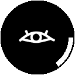

Cyclopes
Local AI image detector
Local reports Right-click an image and choose Report as AI or Report as Non-AI in the Cyclopes menu. A 128 px WebP preview and page details stay only in this browser profile. Nothing is uploaded.
Stored only in this browser profile.
Excluded sites
No excluded sites.